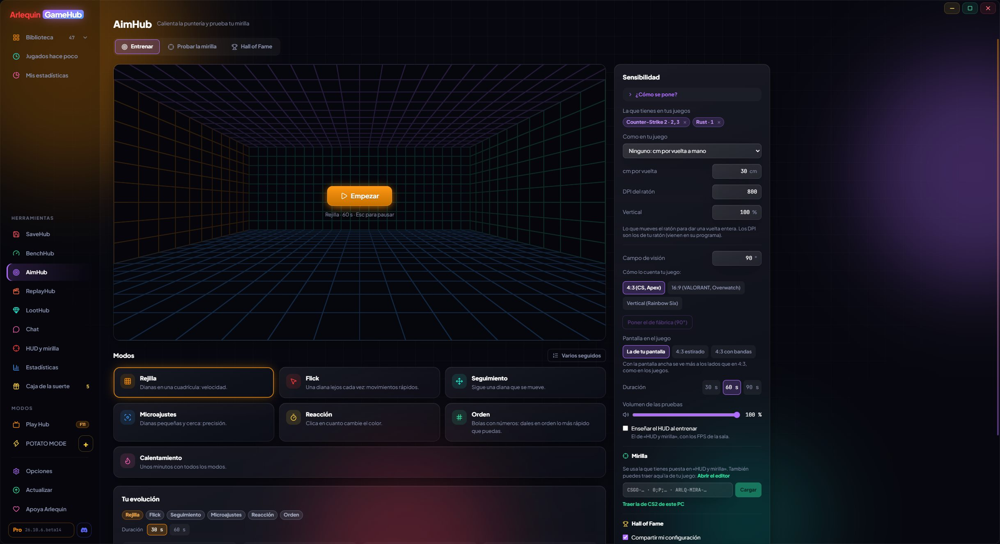

🎯
AimHub：エイムのウォームアップ
プレイ前のウォームアップやクロスヘアのテストができる3Dルーム。自分の感度のまま使えます。
AimHubは一人称視点のルームで、6つのモードがあります。グリッド（スピード）、フリック（素早い動き）、トラッキング（動くターゲットを追う）、マイクロ調整（精度）、反応（ミリ秒単位）、ウォームアップ（すべてを数分ずつ）。視点の動きはゲームそのまま。ゲーム、その感度、マウスのDPIを選ぶだけです（CS2、VALORANT、THE FINALS、Apex、Overwatch 2、Fortnite、Marvel Rivals、Rustなど20以上のゲームに対応）。設定を読み取れるゲームでは、GameHubが現在の設定を読み込みます。Windowsのマウス加速なしでマウスを使い、画面のリフレッシュレートで動作します。
クロスヘアを試すでは、空、砂漠、雪、夜、煙の背景の上で、ゲームの解像度のまま実寸のクロスヘアを確認でき、背景に埋もれてしまう場合は警告が出ます。プレイ結果は進捗とともにPCに保存され、各モードのベスト記録はニックネームと（希望すれば）セットアップ（感度、DPI、視野角、クロスヘア）を添えてAimHub Hall of Fameに送れます。ランキングの閲覧は無料で、他のプレイヤーのセットアップをコピーする機能はArlequinProに含まれます。
そのほか：複数モードの連続プレイ、ゲームごとの視野角、トレーニング中に表示されるHUD、ターゲットに合わせているときのトラッキング音、Hall of Fameのニックネーム（BenchHubと共通）があります。ランキングはここのHall of Fameでも見られます。
使い方
- AimHubはサイドバーのHubsの中にあります。
- Escキーでプレイを一時停止します。
- Hall of Fameに載るには：オプション → プライバシーとデータ → AimHub。
- Rでテストをやり直せます（プレイ中、一時停止中、終了時）。

✦ その他の機能